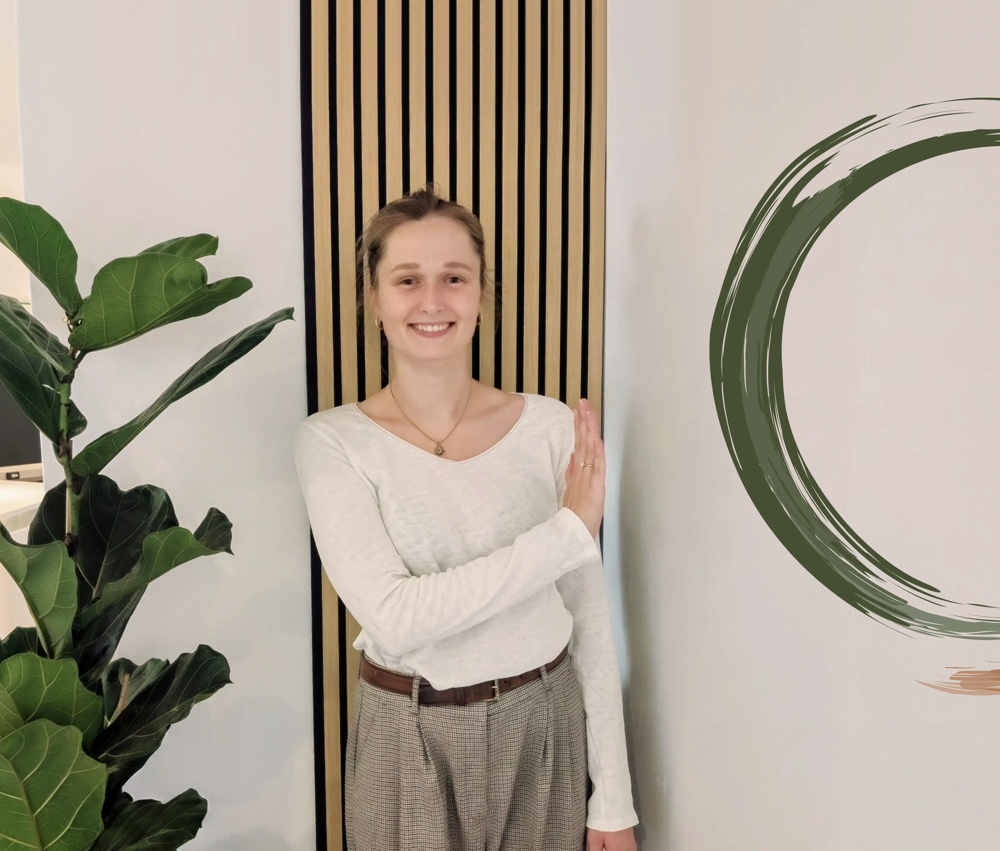
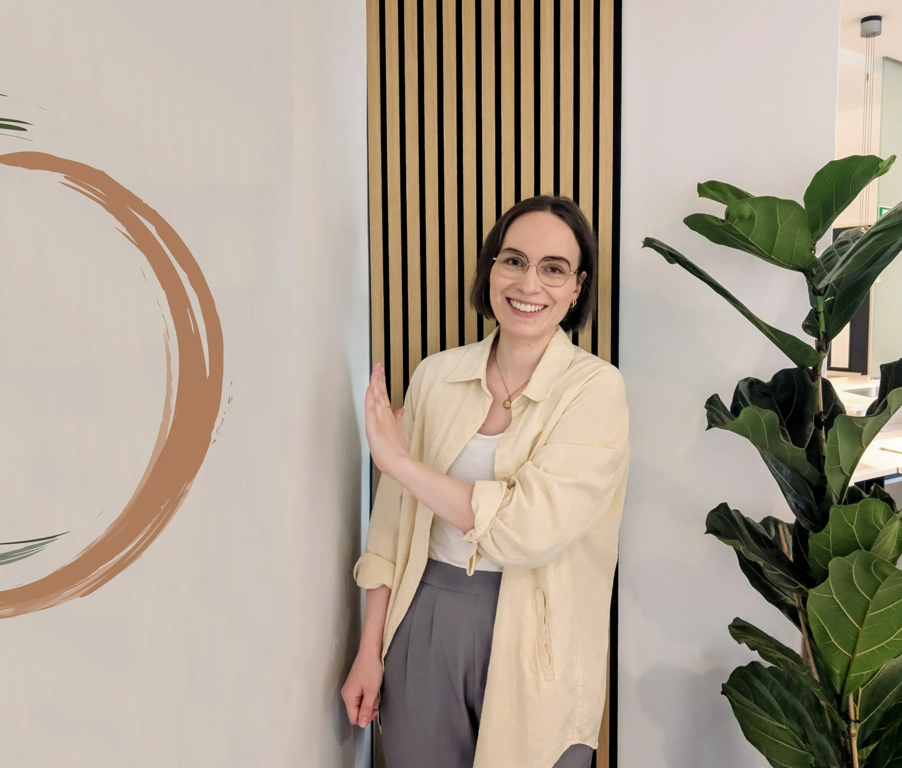

Wer wir sind und wofür wir stehen
Ein Einblick in unsere Praxisräume, unsere Haltung und die Menschen, die für Sie da sind.

Unterschiedliche Stärken – ein gemeinsames Ziel
Jede von uns bringt eigene Schwerpunkte mit – genau diese Vielfalt macht unsere Arbeit für Sie wertvoll.

Annika Denecke
Psychiatrie · Neurofeedback · Hirnleistungstraining
Mein fachlicher Schwerpunkt liegt in der Behandlung von Jugendlichen und Erwachsenen im Bereich der Psychiatrie. Hier begleite ich Menschen unter anderem bei Depressionen, Angststörungen, Stress- und Erschöpfungszuständen, ADHS sowie weiteren psychischen Belastungen und Erkrankungen. Ergänzend arbeite ich mit Neurofeedback und Hirnleistungstraining, um Konzentration, Aufmerksamkeit, Selbstregulation und mentale Leistungsfähigkeit gezielt zu fördern.
Nach meinem Bachelorstudium der Ergotherapie absolvierte ich einen Masterabschluss in Angewandter Psychologie und Beratung. Ergänzend habe ich mich durch verschiedene Fort- und Weiterbildungen in den Bereichen Gesprächstherapie, ADHS und Skillsmanagement spezialisiert. Im Rahmen meiner Masterarbeit entwickelte ich zudem ein eigenes Stressmanagementprogramm zur Prävention von Burnout.
In meiner Freizeit finde ich Ausgleich in der Natur, auf Reisen und beim Sport. Bewegung, neue Erfahrungen und Zeit im Freien sind für mich wichtige Quellen von Energie und Inspiration.

Lisa Werneke
Psychiatrie · Neurofeedback · Neurologie/ Orthopädie/ Handtherapie
Mein Weg in die Ergotherapie führte über einen zweiten Bildungsweg. Nach meinem Studium im Bereich Grafik- und Kommunikationsdesign wurde mir bewusst, dass ich Menschen aktiv in ihrer persönlichen Entwicklung unterstützen möchte. Während meiner Ausbildung zur Ergotherapeutin absolvierte ich zusätzlich eine Ausbildung zum systemischen Coach, deren Perspektiven und Techniken ich heute in meine therapeutische Arbeit einfließen lasse.
Ein fachlicher Schwerpunkt liegt in der Arbeit mit Jugendlichen und Erwachsenen im psychiatrischen Bereich. Hier begleite ich Menschen unter anderem bei Depressionen, ADHS, Stress- und Erschöpfungszuständen. Ergänzend habe ich mich im Bereich Neurofeedback fortgebildet und nutze dieses gezielt zur Förderung von Aufmerksamkeit, Konzentration und Selbstregulation.
Durch meine Begeisterung für Bewegung und die Funktionsweise des menschlichen Körpers begleite ich Menschen ebenso in den Fachbereichen Neurologie, Orthopädie und Handtherapie.
In meiner Freizeit finde ich Ausgleich und Inspiration in kreativen Tätigkeiten, in der Natur beim Wandern sowie auf Reisen. Bewegung und Sport sind für mich nicht nur ein Hobby, sondern eine wichtige Quelle von Energie, Ausgeglichenheit und persönlichem Wachstum.